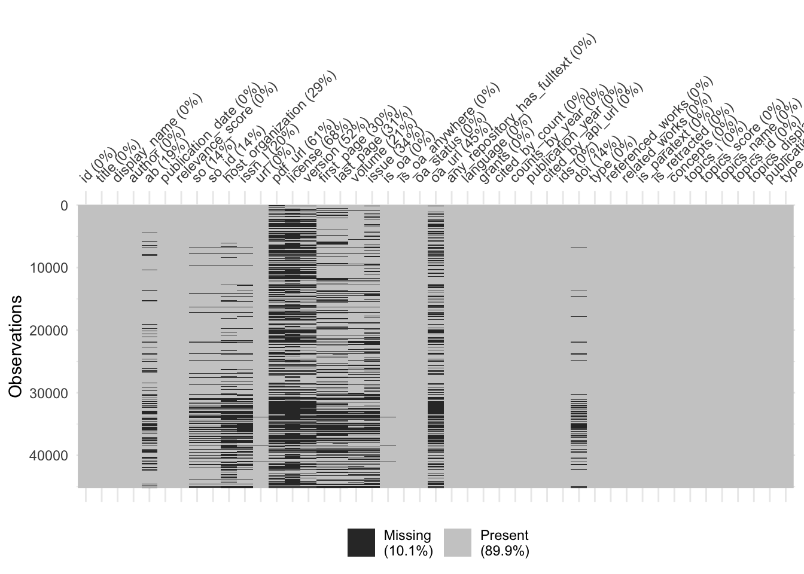
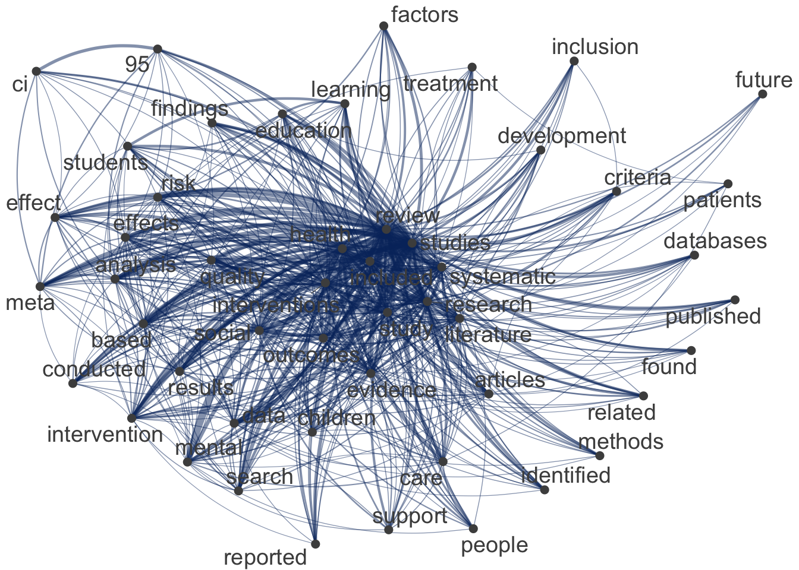
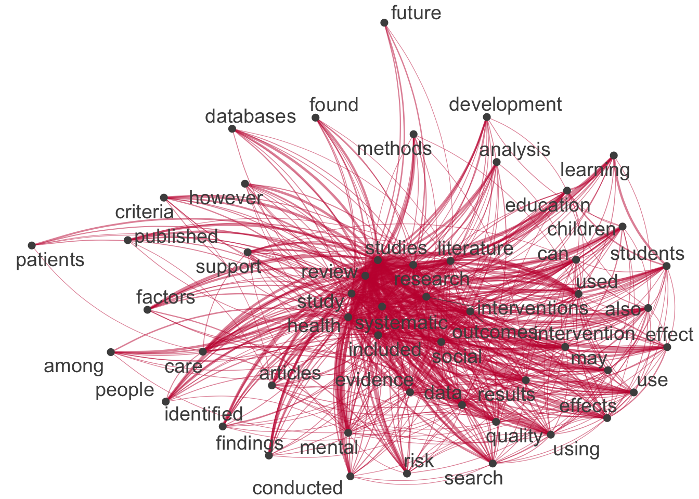
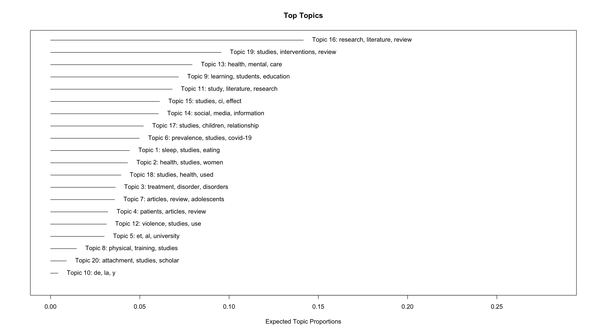
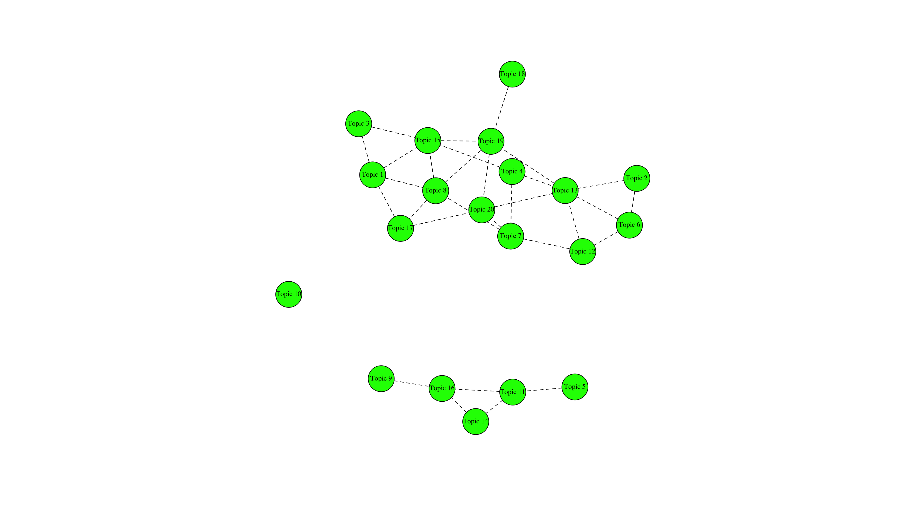

if (!require("pacman")) install.packages("pacman")
pacman::p_load(
here, qs, # file management
magrittr, janitor, # data wrangling
easystats, sjmisc, # data analysis
gt, gtExtras, # table visualization
ggpubr, ggwordcloud, # visualization
# text analysis
tidytext, widyr, # based on tidytext
quanteda, # based on quanteda
quanteda.textmodels, quanteda.textplots, quanteda.textstats,
stm, # structural topic modeling
openalexR,
tidyverse # load last to avoid masking issues
)Unsupervised Machine Learning I
Session 09 - Showcase
 Link to slides
Link to slides
Preparation
Codechunks aus der Sitzung
Erstellung und Bearbeitung der Subsample
review_subsample <- review_works_correct %>%
# Eingrenzung: Sprache und Typ
filter(language == "en") %>%
filter(type == "article") %>%
# Datentranformation
unnest(topics, names_sep = "_") %>%
filter(topics_name == "field") %>%
filter(topics_i == "1") %>%
# Eingrenzung: Forschungsfeldes
filter(
topics_display_name == "Social Sciences"|
topics_display_name == "Psychology"
)
# Überblick
review_subsample %>% glimpseRows: 45,221
Columns: 45
$ id <chr> "https://openalex.org/W4293003987", "https…
$ title <chr> "The WHO-5 Well-Being Index: A Systematic …
$ display_name <chr> "The WHO-5 Well-Being Index: A Systematic …
$ author <list> [<data.frame[4 x 12]>], [<data.frame[2 x …
$ ab <chr> "The 5-item World Health Organization Well…
$ publication_date <chr> "2015-01-01", "2017-08-28", "2014-01-01", …
$ relevance_score <dbl> 938.7603, 752.3500, 591.2553, 576.1210, 56…
$ so <chr> "Psychotherapy and psychosomatics", "Journ…
$ so_id <chr> "https://openalex.org/S184803288", "https:…
$ host_organization <chr> "Karger Publishers", "SAGE Publishing", NA…
$ issn_l <chr> "0033-3190", "0739-456X", NA, "2214-7829",…
$ url <chr> "https://doi.org/10.1159/000376585", "http…
$ pdf_url <chr> "https://www.karger.com/Article/Pdf/376585…
$ license <chr> "cc-by-nc", NA, NA, "cc-by", NA, NA, "cc-b…
$ version <chr> "publishedVersion", NA, "publishedVersion"…
$ first_page <chr> "167", "93", NA, "89", "55", "2150", "e356…
$ last_page <chr> "176", "112", NA, "106", "64", "2159", "e3…
$ volume <chr> "84", "39", NA, "6", "277", "32", "2", "24…
$ issue <chr> "3", "1", NA, NA, NA, "19", "8", NA, "9", …
$ is_oa <lgl> TRUE, FALSE, TRUE, TRUE, TRUE, FALSE, TRUE…
$ is_oa_anywhere <lgl> TRUE, TRUE, TRUE, TRUE, TRUE, FALSE, TRUE,…
$ oa_status <chr> "hybrid", "green", "bronze", "gold", "bron…
$ oa_url <chr> "https://www.karger.com/Article/Pdf/376585…
$ any_repository_has_fulltext <lgl> FALSE, TRUE, TRUE, TRUE, TRUE, FALSE, TRUE…
$ language <chr> "en", "en", "en", "en", "en", "en", "en", …
$ grants <list> NA, NA, NA, <"https://openalex.org/F43203…
$ cited_by_count <int> 2657, 1375, 2568, 803, 3664, 1553, 2895, 9…
$ counts_by_year <list> [<data.frame[11 x 2]>], [<data.frame[7 x …
$ publication_year <int> 2015, 2017, 2014, 2016, 2020, 2014, 2017, …
$ cited_by_api_url <chr> "https://api.openalex.org/works?filter=cit…
$ ids <list> <"https://openalex.org/W4293003987", "htt…
$ doi <chr> "https://doi.org/10.1159/000376585", "http…
$ type <chr> "article", "article", "article", "article"…
$ referenced_works <list> <"https://openalex.org/W1492518593", "htt…
$ related_works <list> <"https://openalex.org/W3020194755", "htt…
$ is_paratext <lgl> FALSE, FALSE, FALSE, FALSE, FALSE, FALSE, …
$ is_retracted <lgl> FALSE, FALSE, FALSE, FALSE, FALSE, FALSE, …
$ concepts <list> [<data.frame[7 x 5]>], [<data.frame[18 x …
$ topics_i <int> 1, 1, 1, 1, 1, 1, 1, 1, 1, 1, 1, 1, 1, 1, …
$ topics_score <dbl> 0.9926, 0.9050, 0.9995, 0.9987, 0.9999, 1.…
$ topics_name <chr> "field", "field", "field", "field", "field…
$ topics_id <chr> "https://openalex.org/fields/32", "https:/…
$ topics_display_name <chr> "Psychology", "Social Sciences", "Psycholo…
$ publication_year_fct <fct> 2015, 2017, 2014, 2016, 2020, 2014, 2017, …
$ type_fct <fct> article, article, article, article, articl…Exkurs: Identfikation von fehlenden Werten
visdat::vis_miss(review_subsample, warn_large_data = FALSE)

Anpassung der Subsample
review_subsample <- review_works_correct %>%
# Eingrenzung: Sprache und Typ
filter(language == "en") %>%
filter(type == "article") %>%
# Datentranformation
unnest(topics, names_sep = "_") %>%
filter(topics_name == "field") %>%
filter(topics_i == "1") %>%
# Eingrenzung: Forschungsfeldes
filter(
topics_display_name == "Social Sciences"|
topics_display_name == "Psychology"
) %>%
# Eingrenzung: Keine Einträge ohne Abstract
filter(!is.na(ab))
# Überblick
review_subsample %>% glimpseRows: 36,680
Columns: 45
$ id <chr> "https://openalex.org/W4293003987", "https…
$ title <chr> "The WHO-5 Well-Being Index: A Systematic …
$ display_name <chr> "The WHO-5 Well-Being Index: A Systematic …
$ author <list> [<data.frame[4 x 12]>], [<data.frame[2 x …
$ ab <chr> "The 5-item World Health Organization Well…
$ publication_date <chr> "2015-01-01", "2017-08-28", "2014-01-01", …
$ relevance_score <dbl> 938.7603, 752.3500, 591.2553, 576.1210, 56…
$ so <chr> "Psychotherapy and psychosomatics", "Journ…
$ so_id <chr> "https://openalex.org/S184803288", "https:…
$ host_organization <chr> "Karger Publishers", "SAGE Publishing", NA…
$ issn_l <chr> "0033-3190", "0739-456X", NA, "2214-7829",…
$ url <chr> "https://doi.org/10.1159/000376585", "http…
$ pdf_url <chr> "https://www.karger.com/Article/Pdf/376585…
$ license <chr> "cc-by-nc", NA, NA, "cc-by", NA, NA, "cc-b…
$ version <chr> "publishedVersion", NA, "publishedVersion"…
$ first_page <chr> "167", "93", NA, "89", "55", "2150", "e356…
$ last_page <chr> "176", "112", NA, "106", "64", "2159", "e3…
$ volume <chr> "84", "39", NA, "6", "277", "32", "2", "24…
$ issue <chr> "3", "1", NA, NA, NA, "19", "8", NA, "9", …
$ is_oa <lgl> TRUE, FALSE, TRUE, TRUE, TRUE, FALSE, TRUE…
$ is_oa_anywhere <lgl> TRUE, TRUE, TRUE, TRUE, TRUE, FALSE, TRUE,…
$ oa_status <chr> "hybrid", "green", "bronze", "gold", "bron…
$ oa_url <chr> "https://www.karger.com/Article/Pdf/376585…
$ any_repository_has_fulltext <lgl> FALSE, TRUE, TRUE, TRUE, TRUE, FALSE, TRUE…
$ language <chr> "en", "en", "en", "en", "en", "en", "en", …
$ grants <list> NA, NA, NA, <"https://openalex.org/F43203…
$ cited_by_count <int> 2657, 1375, 2568, 803, 3664, 1553, 2895, 9…
$ counts_by_year <list> [<data.frame[11 x 2]>], [<data.frame[7 x …
$ publication_year <int> 2015, 2017, 2014, 2016, 2020, 2014, 2017, …
$ cited_by_api_url <chr> "https://api.openalex.org/works?filter=cit…
$ ids <list> <"https://openalex.org/W4293003987", "htt…
$ doi <chr> "https://doi.org/10.1159/000376585", "http…
$ type <chr> "article", "article", "article", "article"…
$ referenced_works <list> <"https://openalex.org/W1492518593", "htt…
$ related_works <list> <"https://openalex.org/W3020194755", "htt…
$ is_paratext <lgl> FALSE, FALSE, FALSE, FALSE, FALSE, FALSE, …
$ is_retracted <lgl> FALSE, FALSE, FALSE, FALSE, FALSE, FALSE, …
$ concepts <list> [<data.frame[7 x 5]>], [<data.frame[18 x …
$ topics_i <int> 1, 1, 1, 1, 1, 1, 1, 1, 1, 1, 1, 1, 1, 1, …
$ topics_score <dbl> 0.9926, 0.9050, 0.9995, 0.9987, 0.9999, 1.…
$ topics_name <chr> "field", "field", "field", "field", "field…
$ topics_id <chr> "https://openalex.org/fields/32", "https:/…
$ topics_display_name <chr> "Psychology", "Social Sciences", "Psycholo…
$ publication_year_fct <fct> 2015, 2017, 2014, 2016, 2020, 2014, 2017, …
$ type_fct <fct> article, article, article, article, articl…DTM/DFM Erstellung
`tidytext``
# Create tidy data
subsample_tidy <- review_subsample %>%
tidytext::unnest_tokens("text", ab) %>%
filter(!text %in% tidytext::stop_words$word)
# Create summarized data
subsample_summarized <- subsample_tidy %>%
count(id, text)
# Create DTM
subsample_dtm <- subsample_summarized %>%
cast_dtm(id, text, n)
# Preview
subsample_dtm<<DocumentTermMatrix (documents: 36654, terms: 122147)>>
Non-/sparse entries: 3280664/4473895474
Sparsity : 100%
Maximal term length: 188
Weighting : term frequency (tf)quanteda
# Create corpus
quanteda_corpus <- review_subsample %>%
quanteda::corpus(
docid_field = "id",
text_field = "ab"
)
# Tokenize
quanteda_token <- quanteda_corpus %>%
quanteda::tokens(
remove_punct = TRUE,
remove_symbols = TRUE,
remove_numbers = TRUE,
remove_url = TRUE,
split_tags = FALSE # keep hashtags and mentions
) %>%
quanteda::tokens_tolower() %>%
quanteda::tokens_remove(
pattern = stopwords("en")
)
# Convert to Document-Feature-Matrix (DFM)
quanteda_dfm <- quanteda_token %>%
quanteda::dfm()
# Preview
quanteda_dfmNetzwerk der Top-Begriffe
tidytext
# Extract most common hashtags
top50_features_tidy <- subsample_tidy %>%
count(text, sort = TRUE) %>%
slice_head(n = 50) %>%
pull(text)
# Visualize
subsample_tidy %>%
count(id, text, sort = TRUE) %>%
filter(!is.na(text)) %>%
cast_dfm(id, text, n) %>%
quanteda::fcm() %>%
quanteda::fcm_select(
pattern = top50_features_tidy,
case_insensitive = FALSE
) %>%
quanteda.textplots::textplot_network(
edge_color = "#04316A"
)
quanteda
# Extract most common features
top50_features_quanteda <- quanteda_dfm %>%
topfeatures(50) %>%
names()
# Construct feature-occurrence matrix of features
quanteda_dfm %>%
fcm() %>%
fcm_select(pattern = top50_features_quanteda) %>%
textplot_network(
edge_color = "#C50F3C"
) 
Preparation for STM
# Pruning
quanteda_dfm_trim <- quanteda_dfm %>%
dfm_trim(
min_docfreq = 10/nrow(review_subsample),
max_docfreq = 0.99,
docfreq_type = "prop")
# Convert for stm topic modeling
quanteda_stm <- quanteda_dfm_trim %>%
convert(to = "stm")Structural Topic Model
Schätzung
tictoc::tic()
stm_mdl <- stm::stm(
documents = quanteda_stm$documents,
vocab = quanteda_stm$vocab,
K = 20,
seed = 42,
max.em.its = 10,
init.type = "Spectral",
verbose = TRUE)
tictoc::toc(log = TRUE)Modelinformationen
# Überblick über STM
stm_mdlA topic model with 20 topics, 36650 documents and a 14322 word dictionary.Überblick über die Themen
# Simple
plot(stm_mdl, type = "summary")
# Komplex
top_gamma <- stm_mdl %>%
tidy(matrix = "gamma") %>%
dplyr::group_by(topic) %>%
dplyr::summarise(gamma = mean(gamma), .groups = "drop") %>%
dplyr::arrange(desc(gamma))
top_beta <- stm_mdl %>%
tidytext::tidy(.) %>%
dplyr::group_by(topic) %>%
dplyr::arrange(-beta) %>%
dplyr::top_n(10, wt = beta) %>%
dplyr::select(topic, term) %>%
dplyr::summarise(terms_beta = toString(term), .groups = "drop")
top_topics_terms <- top_beta %>%
dplyr::left_join(top_gamma, by = "topic") %>%
dplyr::mutate(
topic = reorder(topic, gamma)
)
# Preview
top_topics_terms %>%
mutate(across(gamma, ~round(.,3))) %>%
dplyr::arrange(-gamma) %>%
gt() %>%
cols_label(
topic = "Topic",
terms_beta = "Top Terms (based on beta)",
gamma = "Gamma"
) %>%
gtExtras::gt_theme_538()| Topic | Top Terms (based on beta) | Gamma |
|---|---|---|
| 16 | research, literature, review, paper, systematic, future, study, analysis, findings, knowledge | 0.142 |
| 19 | studies, interventions, review, systematic, evidence, outcomes, included, quality, intervention, health | 0.096 |
| 13 | health, mental, care, review, support, family, children, social, factors, studies | 0.079 |
| 9 | learning, students, education, school, review, skills, educational, teachers, teaching, study | 0.072 |
| 11 | study, literature, research, can, work, development, review, also, human, economic | 0.068 |
| 15 | studies, ci, effect, meta-analysis, depression, p, trials, anxiety, effects, interventions | 0.061 |
| 14 | social, media, information, use, digital, data, technology, communication, review, research | 0.060 |
| 17 | studies, children, relationship, review, language, variables, research, factors, results, effects | 0.052 |
| 6 | prevalence, studies, covid-19, suicide, among, risk, pandemic, countries, ci, vaccine | 0.050 |
| 1 | sleep, studies, eating, cognitive, review, associated, weight, body, may, association | 0.044 |
| 2 | health, studies, women, gender, review, care, social, services, cultural, access | 0.043 |
| 18 | studies, health, used, measures, review, tools, instruments, assessment, training, n | 0.039 |
| 3 | treatment, disorder, disorders, patients, ptsd, symptoms, clinical, studies, therapy, anxiety | 0.036 |
| 7 | articles, review, adolescents, studies, literature, search, use, results, systematic, databases | 0.036 |
| 4 | patients, articles, review, music, therapy, cancer, can, study, pain, life | 0.032 |
| 12 | violence, studies, use, sexual, risk, h3, ipv, substance, alcohol, review | 0.031 |
| 5 | et, al, university, review, gt, literature, lt, author, p, search | 0.030 |
| 8 | physical, training, studies, disability, exercise, disabilities, employment, ed, review, strength | 0.015 |
| 20 | attachment, studies, scholar, google, science, review, social, styles, welfare, research | 0.009 |
| 10 | de, la, y, en, los, e, 的, el, se, que | 0.004 |
Themenkorrelation
stm_corr <- stm::topicCorr(stm_mdl)
plot(stm_corr)
Fokus auf einzele Themen
Prominente Wörter
# Fokus auf Themas 16
stm::labelTopics(stm_mdl, topic=16)Topic 16 Top Words:
Highest Prob: research, literature, review, paper, systematic, future, study
FREX: tourism, sustainable, sustainability, originality, innovation, conceptual, agenda
Lift: paradigmatic, hrd, edlm, positivist, internationalisation, tccm, wom
Score: tourism, research, literature, paper, leadership, themes, sustainable # Fokus auf Thema 10
stm::labelTopics(stm_mdl, topic=10)Topic 10 Top Words:
Highest Prob: de, la, y, en, los, e, 的
FREX: resultados, foram, que, sobre, intervenciones, riesgo, uma
Lift: criterios, efecto, así, comparación, cumplieron, debido, depresión
Score: de, la, 的, en, los, y, que